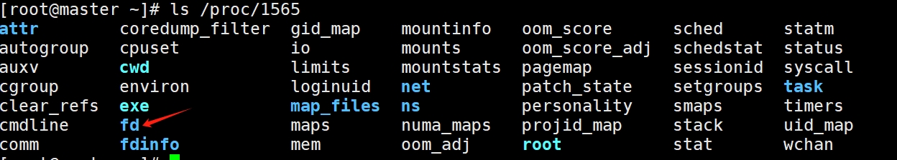
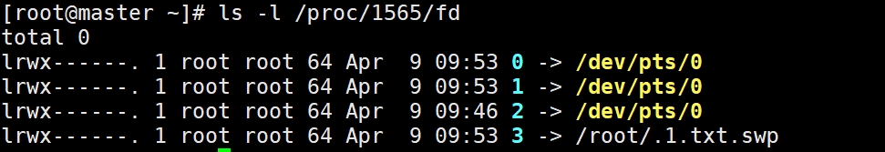

vim 1.txt #打开一个文件 ps aux | grep vim #在新终端中查看vim的进程号 [root@master ~]# ps aux | grep vim root 1565 0.0 0.2 149264 4960 pts/0 S+ 09:46 0:00 vim 1.txt ls -d /proc/1565 #查看 ls /proc/1565 #查看进程1565的信息

ls -l /proc/1565/fd #里面的数字是链接

echo 123 > /dev/pts/0 #在新窗口里面输入这个 旧窗口里面会出现：
输出重定向的类型
正确输出
1> 相当于 > #会覆盖内容
1>> 相当于 >> #追加内容
错误输出
2> #错误输出，会覆盖内容
2>> #错误输出，追加内容
同时输出正确和错误信息
&> # &号和>号不能分开，否则会当成后台运行
ls /home /aaaaa &> 2.txt ls /home /aaaaa &> /dev/null #什么信息都不输出，相当于丢进了垃圾桶回收站